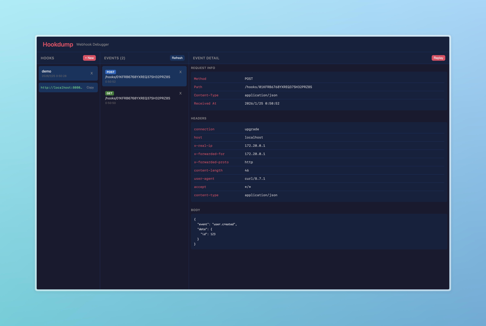

Personal webhook workbench
Inspect webhook traffic without leaving your machine.
Escar captures incoming webhook requests, shows the raw details, copies events as cURL, and replays payloads into any target endpoint.

Built for integration debugging
Capture
Create hook URLs and store incoming headers, body, content type, method, and timestamp.
Inspect
Use a focused three-panel interface for hooks, captured events, and request detail.
Replay
Send captured events to any URL and keep replay history for debugging retries.
Copy cURL
Turn any selected event into a command you can run, share, or paste into docs.
Forward
Forward incoming webhooks to localhost or another service while still recording the request.
Monitor
Alert Slack, Discord, or email when expected webhook traffic stops arriving.
Run locally
bun install bun run --cwd shared build bun run dev:backend bun run dev:frontend